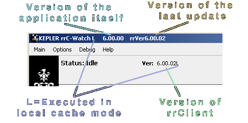

If you install updates, then not all applications are updated.
Only applications that got fixes/changes are updated.
So a RR application can display multiple versions.
This example shows the rrClientWatch:

The last update you have installed was 6.00.02.
The application rrClientWatch itself is 6.00.00 (so it was not included in the last update).
rrClientWatch connects to the rrClient that runs as service in the background.
The rrClient is v6.00.02 (it was included in the update)
RR applications can be started in "local cache mode".
rrClient Service, rrControl, rrClientWatch and rrSubmitter are started by default in "local cache mode".
The executable and all required libraries are copied to the local drive of the machine that executes the application.
There will not be any problems if there are network connection issues and there is no constant connection to the fileserver.
If the application needs to be started again, the machine does not have to read the executables from the network.
(of course changes/updates are recognized).